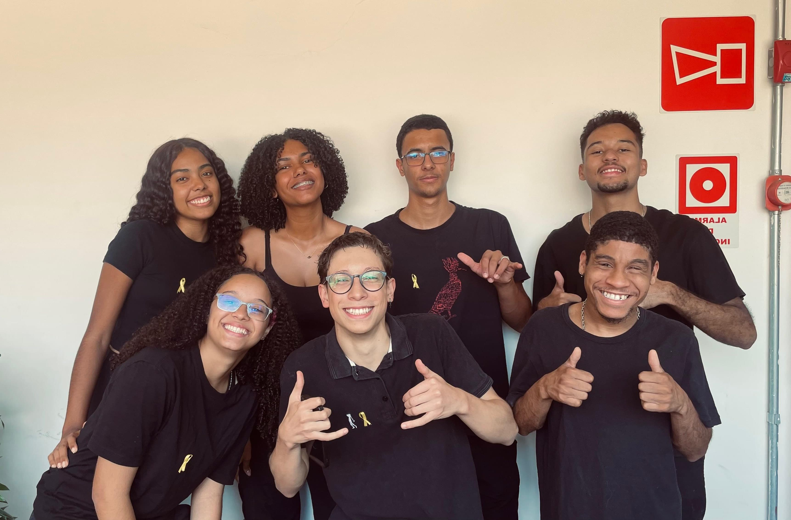

..TRANSFORME SEU INTERIOR PARA MUDAR O SEU EXTERIOR.. PsiConecta, onde se cuida da mente e do coração. Toda mudança começa de dentro pra fora e o PsiConecta é a
chave para se entender e se organizar internamente, e mudar
tudo ao seu redor.

O que você vai encontrar aqui
Psicólogos qualificados:
Uma equipe formada por profissionais experientes e de diferentes áreas da psicologia, selecionados para oferecer um atendimento acolhedor e ético.
Técnicas terapêuticas: Aplicações de abordagens comprovadas e adaptadas às necessidades individuais de cada usuário.
Psicoeducação:
Ajudamos você a organizar e conciliar sua vida pessoal, sua saúde emocional e sua saúde física.
Acessibilidade: Navegação intuitiva e serviços gratuitos, tornando o cuidado psicológico disponível para todos.
Contato fácil e rápido com a equipe:
Canal direto com a equipe de comunicação com os desenvolvedores e suporte técnico para solucionar dúvidas ou problemas.
Você não está só. Conte com os voluntários do PsiConecta
Psicólogos
No PsiConecta você encontra profissionais
qualificados nas mais diversas áreas da
psicologia, que estão dispostos a ajudar você.
Fale conosco
Tem alguma dúvida ou precisa de suporte?
No Fale conosco você sempre entrará em
contato diretamente com nossa equipe.
Que tal ser voluntário?
Doamos nosso tempo e atenção para oferecer um espaço de
escuta e acolhimento a quem deseja conversar de forma
anônima, sigilosa e sem julgamentos ou críticas.
Ser voluntário no PsiConecta é muito mais do que apenas
conversar com alguém, é lidar com os princípios de
transparência e o sigilo que são valores fundamentais para nós.
Venha ser voluntário no PsiConecta!
Para realizar o serviço de apoio emocional, o PsiConecta
conta com o trabalho de seus voluntários. Porém, não há
nenhuma fonte de financiamento pública ou privada para
garantir a sua infraestrutura e a divulgação.
Ao arrecadar fundos para o PsiConecta, você nos ajuda a
estar lá para apoiar aqueles que mais precisam de nós.
PsiConecta
Ficou com alguma dúvida? Confira as respostas para as perguntas frequentes
ou entre em contato conosco.
ATENDIMENTO POR EMAIL:
contato@psiconecta.com
O PsiConecta substitui a terapia?
Pensa em fazer uma parceria?
Quer utilizar a marca PsiConecta nas suas divulgações?